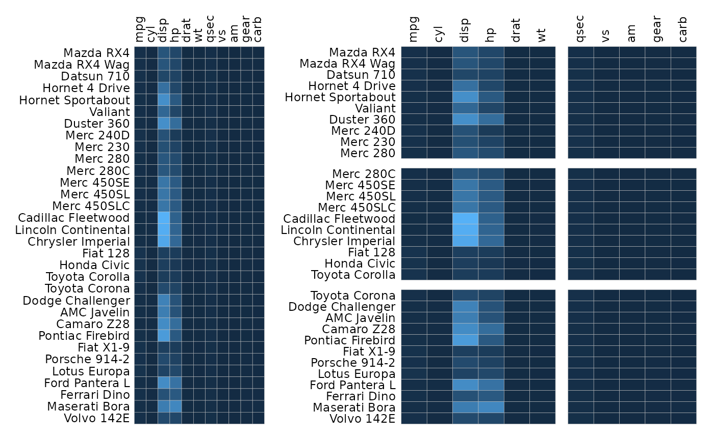
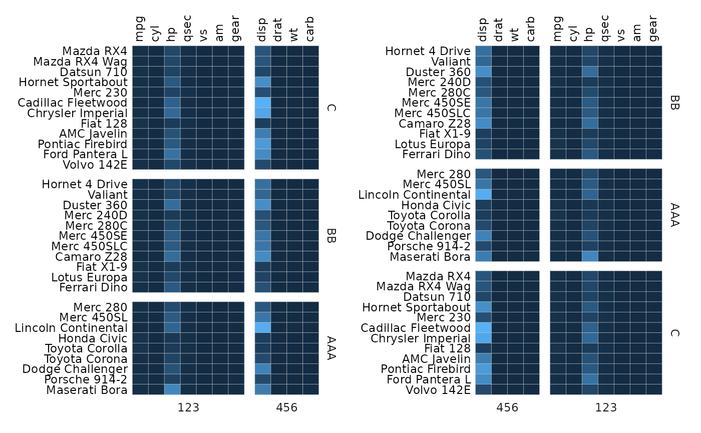
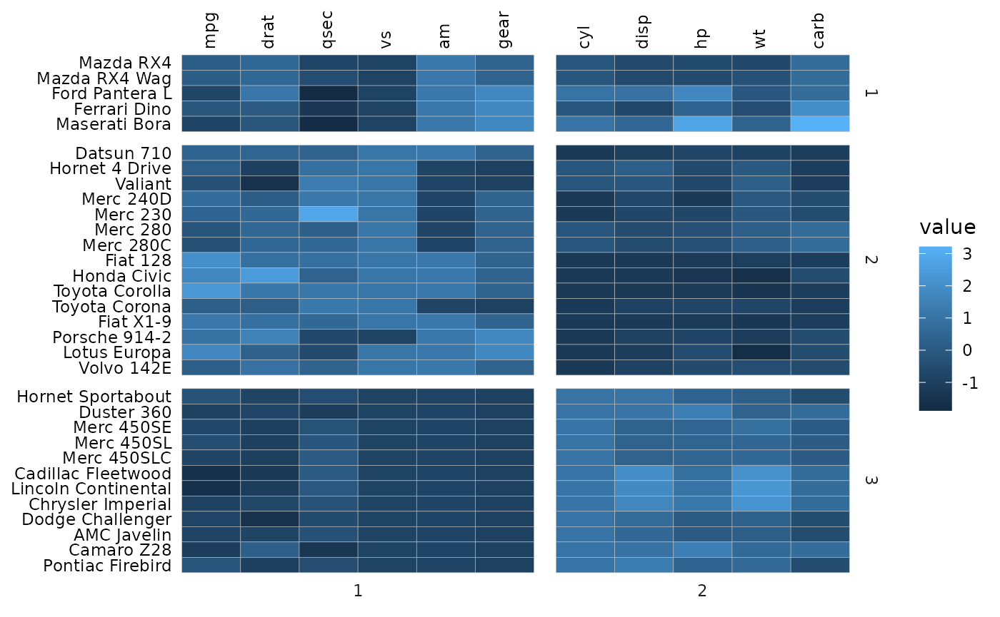
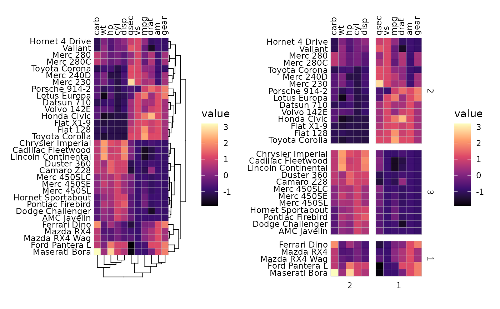
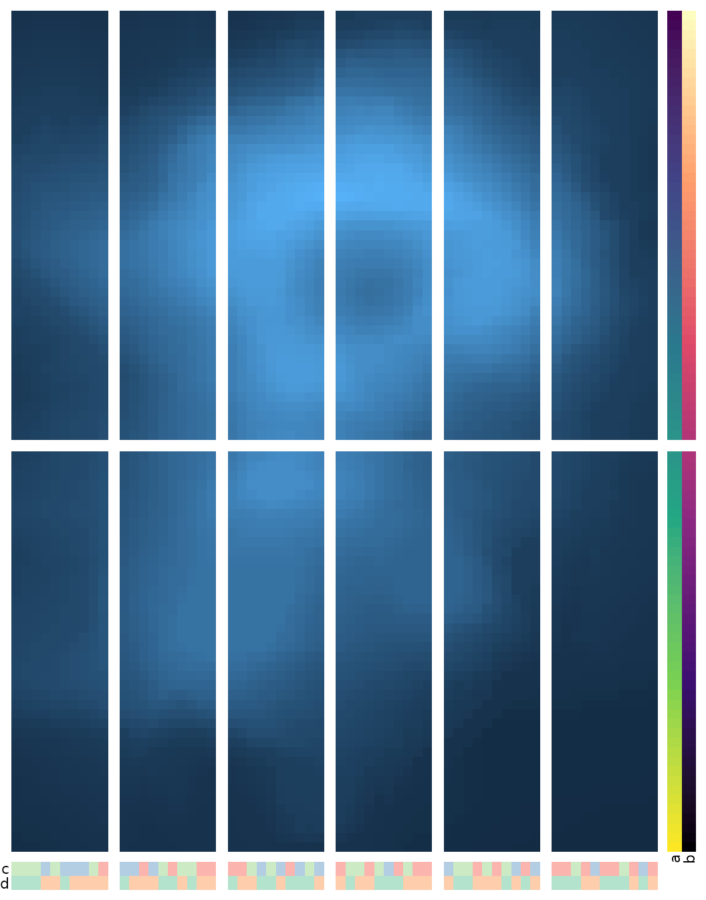

Gaps can be introduced into heatmaps with the split_rows
and split_cols arguments (the gaps are made by adding
facets to the plot). The simplest way to use these arguments is to
provide numeric vectors with the indices of the positions to split at
(counting from the top for rows and left for columns).
plt1 <- gghm(mtcars, legend_order = NA)
plt2 <- gghm(mtcars, legend_order = NA,
split_rows = c(10, 20), split_cols = 6)
plt1 + plt2
Without facets, the heatmaps use ggplot2::coord_fixed()
to make the cells square. As this does not work with facets using free
scales, the cells will stretch with the plot when there are gaps.
When split_rows and split_cols are shorter
than the number of rows or columns, respectively, they work as shown
above. It is also possible to provide vectors of the same lengths as the
corresponding dimensions. In this case they are treated as the facet
memberships for the rows or columns and the facet names are displayed as
well. split_rows_side and split_cols_side
change the sides where the names are displayed.
gghm(mtcars,
# Two facets '123' and '456' for columns
split_cols = c(rep(123, 6), rep(456, 5)),
# Three facets 'AAA', 'BB', and 'C' for rows
split_rows = c(rep("AAA", 10), rep("BB", 10), rep("C", 12)))Rows or columns may end up in a different order compared to the input
depending on the facetting (e.g. disp is in the second facet in the
first plot below even though it’s the third column in the input). Within
each facet the rows/columns will be ordered as they were in the input as
far as possible. The facets themselves are ordered by the order of
appearance in the split_rows and split_cols
vectors. If they are factor vectors the levels will decide the
order.
# Make a more jumbled facet membership vector
set.seed(123)
row_facets <- sample(c("AAA", "BB", "C"), 32, TRUE)
col_facets <- sample(c(123, 456), 11, TRUE)
plt1 <- gghm(mtcars, legend_order = NA,
split_rows = row_facets,
split_cols = col_facets)
# Make the second plot with a different facet order
row_facets2 <- factor(row_facets, levels = c("BB", "AAA", "C"))
col_facets2 <- factor(col_facets, levels = c("456", "123"))
plt2 <- gghm(mtcars, legend_order = NA,
split_rows = row_facets2,
split_cols = col_facets2)
plt1 + plt2
It is also possible to provide a named facet membership vector (where the names are the row/column names of the input). The facet memberships are then matched with the names so that the order does not matter. Below is an example of facetting by clusters (which only bunches together the rows or columns by cluster but does not reorder according to the clustering within the clusters).
# Perform hierarchical clustering and make clusters using the stats::cutree() function
# Luckily the output is a named vector of cluster memberships
row_clust <- cutree(hclust(dist(scale(mtcars))), 3)
col_clust <- cutree(hclust(dist(t(scale(mtcars)))), 2)
gghm(mtcars, scale_data = "col",
split_rows = row_clust,
split_cols = col_clust)
When the heatmap is symmetric (for example a correlation heatmap), it is recommended to specify facets using indices (or using the same facet membership vector) as the heatmap may become asymmetric if the rows and columns end up in a different order because of the facets.
# Just using indices
plt1 <- ggcorrhm(mtcars, split_rows = 5, split_cols = 5, legend_order = NA) +
labs(title = "Same facets")
# Example 1: same memberships but facets in a different order
facet_vec1 <- c(rep(1, 5), rep(2, 6))
facet_vec2 <- factor(facet_vec1, levels = c("2", "1"))
plt2 <- ggcorrhm(mtcars, legend_order = NA,
split_rows = facet_vec1,
split_cols = facet_vec2) +
labs(title = "Same facets but different order")
# Make two random facet membership vectors
set.seed(123)
plt3 <- ggcorrhm(mtcars, legend_order = NA,
split_rows = sample(letters[1:2], 11, TRUE),
split_cols = sample(1:2, 11, TRUE)) +
labs(title = "Different facets")
plt1 + plt2 + plt3 + plot_layout(design = "#AA#\nBBCC")If the symmetric heatmap uses a layout where the y axis is flipped (top left or bottom right layouts), the rows are counted from the bottom.
# Two from the top
plt1 <- ggcorrhm(mtcars, split_rows = 2, split_cols = 2,
layout = "bl")
# Two from the bottom
plt2 <- ggcorrhm(mtcars, split_rows = 2, split_cols = 2,
layout = "br")
plt1 + plt2Changing facet appearance
ggplot2 functions can be used to change the gap sizes
and how the facet names look.
# Make gradient data for plotting
plt_dat <- sapply(seq(1, 20), function(x) {
seq(x, x + 19)
})
gghm(plt_dat,
split_rows = rep(letters[1:4], each = 5),
split_cols = rep(LETTERS[1:4], each = 5)) +
theme(
# panel.spacing.x and .y + ggplot2::unit() for gap sizes
panel.spacing.x = unit(0.1, "line"),
panel.spacing.y = unit(1, "line"),
# strip.background.x and .y for changing the rectangles where the names are written
strip.background.x = element_rect(fill = "skyblue", colour = 0),
strip.background.y = element_rect(fill = "grey75", colour = "grey50",
linewidth = 1, linetype = 3),
# strip.text.x and .y (adding the position can help) for text
strip.text.x.bottom = element_text(size = 10, colour = "white"),
strip.text.y.right = element_text(face = "bold", angle = 0, colour = "grey25"))The split_rows_side and split_cols_side
arguments control the sides of the facet strips.
gghm(plt_dat,
split_rows_side = "left", split_cols_side = "top",
split_rows = rep(letters[1:4], each = 5),
split_cols = rep(LETTERS[1:4], each = 5)) +
theme(
panel.spacing.x = unit(0.1, "line"),
panel.spacing.y = unit(1, "line"),
strip.background.x = element_rect(fill = "skyblue", colour = 0),
strip.background.y = element_rect(fill = "grey75", colour = "grey50",
linewidth = 1, linetype = 3),
strip.text.x.top = element_text(size = 10, colour = "white"),
strip.text.y.left = element_text(face = "bold", angle = 0, colour = "grey25"))Clustering and annotation
If clustering is applied, split_rows and
split_cols work differently and only take single numeric
values. The number is given to stats::cutree() to divide
the data into clusters that then define the facets of the plot. In this
case the dendrograms cannot be shown.
plt1 <- gghm(mtcars, scale_data = "col", col_scale = "A",
cluster_rows = TRUE, cluster_cols = TRUE)
plt2 <- gghm(mtcars, scale_data = "col", col_scale = "A",
cluster_rows = TRUE, cluster_cols = TRUE,
split_rows = 3, split_cols = 2)
plt1 + plt2
When annotation is added, the annotation will also be split into the facets.
set.seed(123)
gghm(volcano,
split_rows = 45,
split_cols = seq(10, 50, by = 10),
annot_rows_df = data.frame(a = 1:nrow(volcano),
b = nrow(volcano):1),
annot_cols_df = data.frame(c = sample(letters[1:3], ncol(volcano), TRUE),
d = sample(LETTERS[1:2], ncol(volcano), TRUE)),
# Make annotations more visible
annot_size = 1.5, annot_dist = 1,
# Remove row/col names, cell borders and legends
show_names_x = FALSE, show_names_y = FALSE, border_col = 0, legend_order = NA)
When annotations exist in the rows while the columns are facetted (or vice versa), the annotations are placed in the first or last facet depending on the side. Unfortunately this means that the facet strip will be stretched to fit the annotations too.
facet_mem <- c(rep("A", 3), rep("B", 4), rep("C", 4))
ggcorrhm(mtcars, split_rows = facet_mem, split_cols = facet_mem,
annot_rows_df = data.frame(.names = colnames(mtcars),
a = 1:11, b = 11:1, c = 1:11)) +
theme(strip.background = element_rect(fill = "pink"))